Internship Work
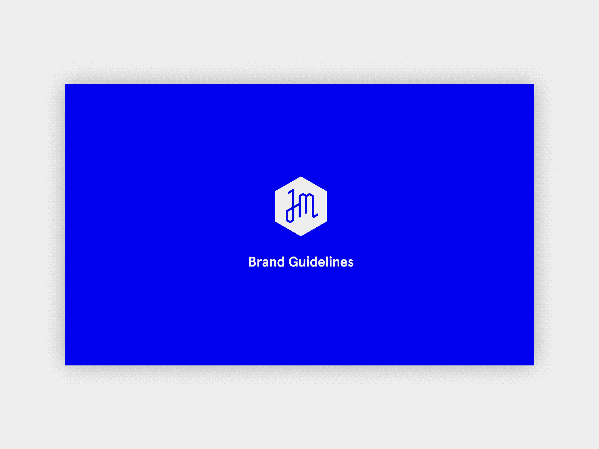I noticed that the Jewish Museum brand guidelines were outdated while interning with them in June, 2018. I approached my Creative Director, Roy Rub, with a proposal to update the Museum's brand guidelines by the end of my internship.
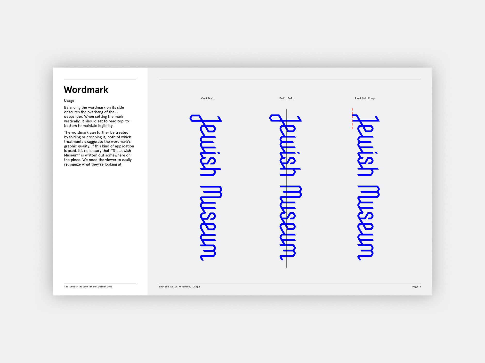
After Roy and I established the current brand practices, I collected samples of on-brand materials from the previous year and categorized them by department.
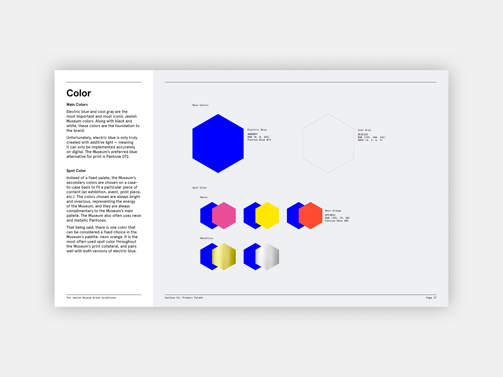
Then, I wrote supplements for each category and arranged all of the information into a forty-page document which encompassed graphic treatments throughout every Museum department.
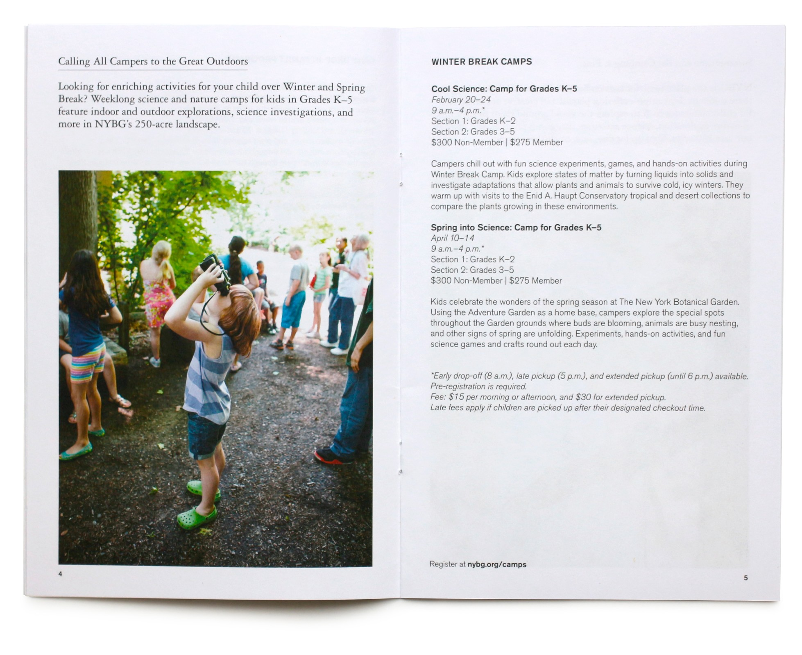

Selected work from the Jewish Museum.
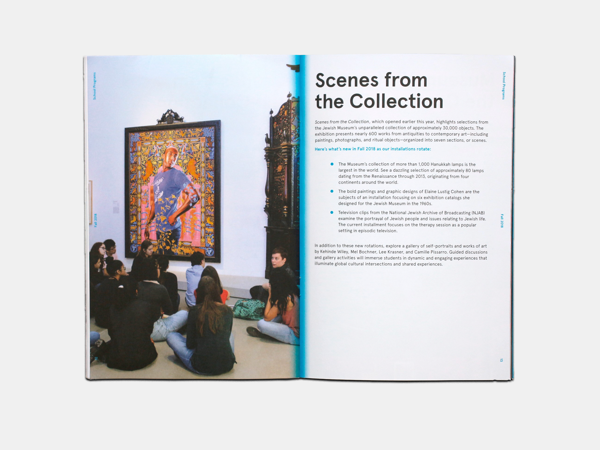
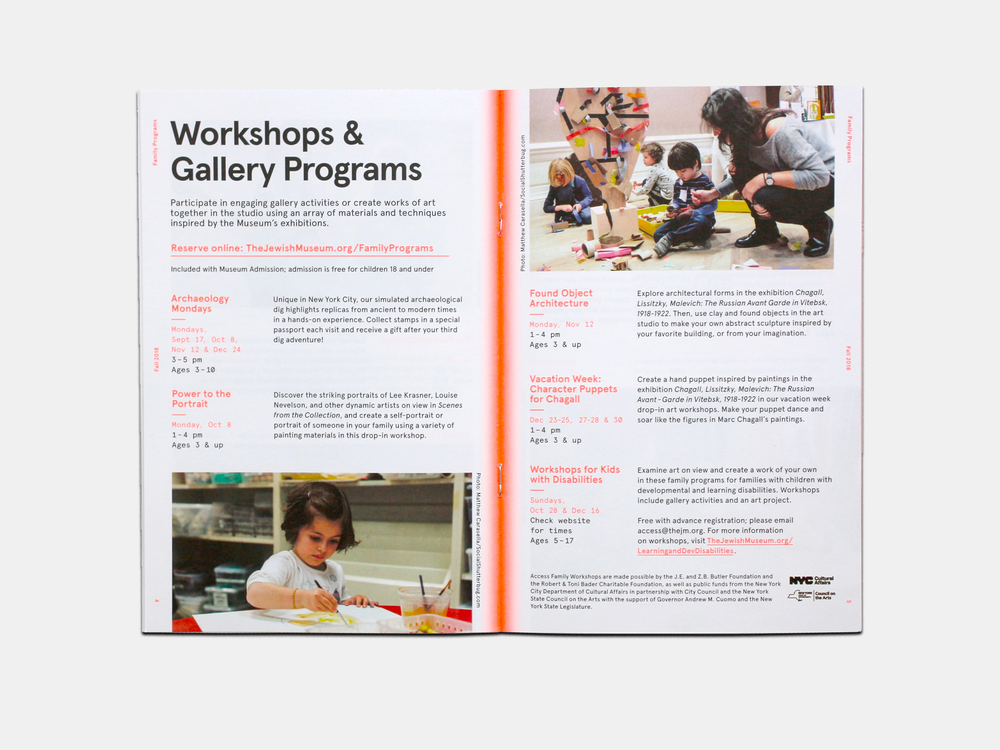
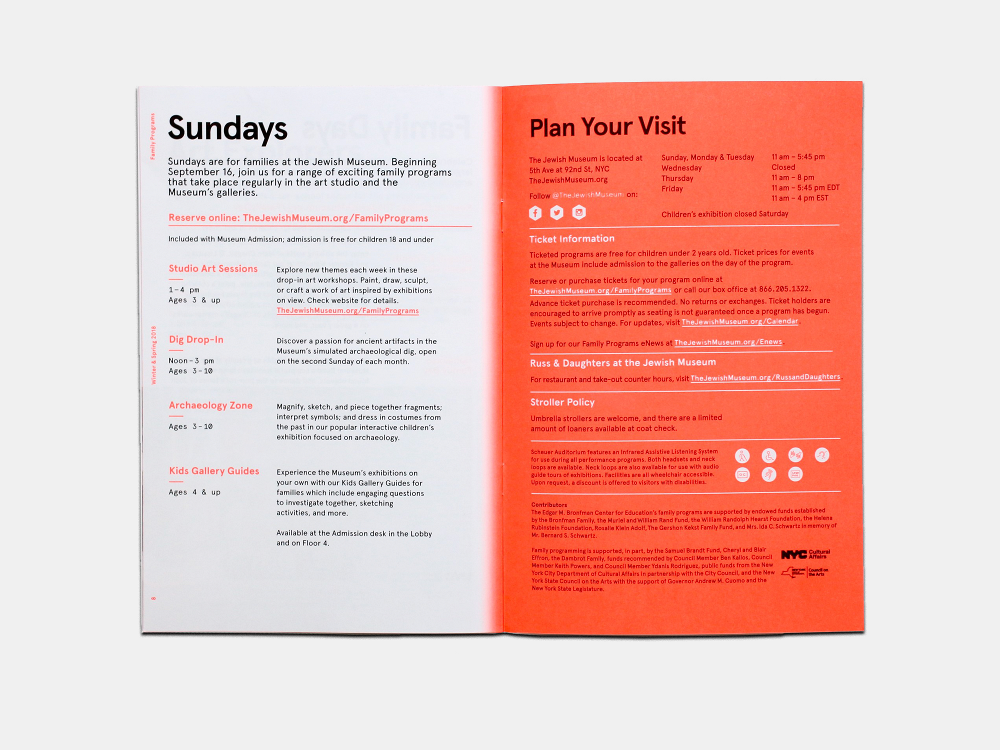
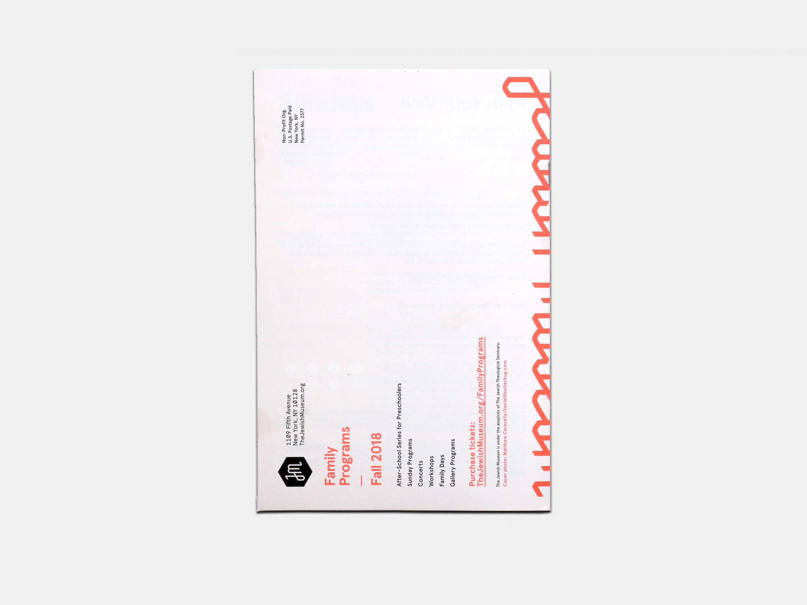
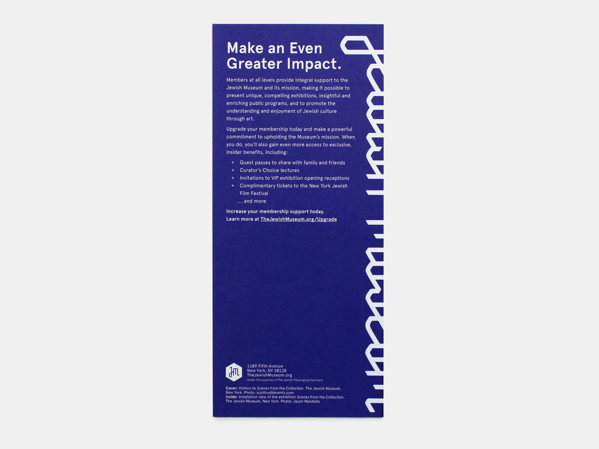
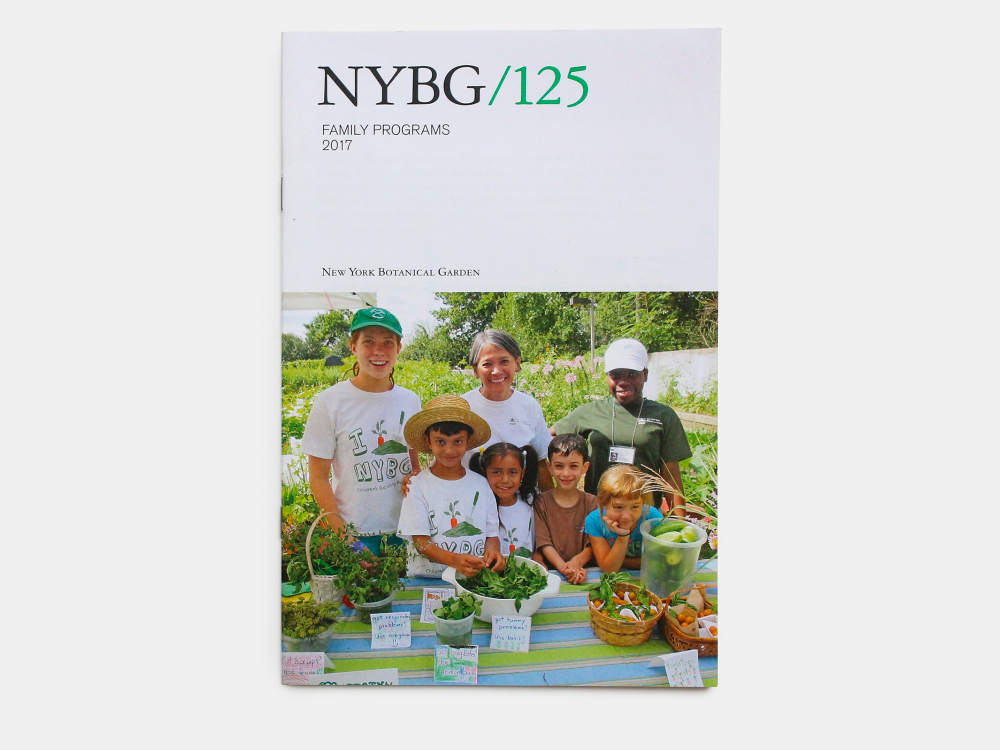
Selected work from the New York Botanical Garden.
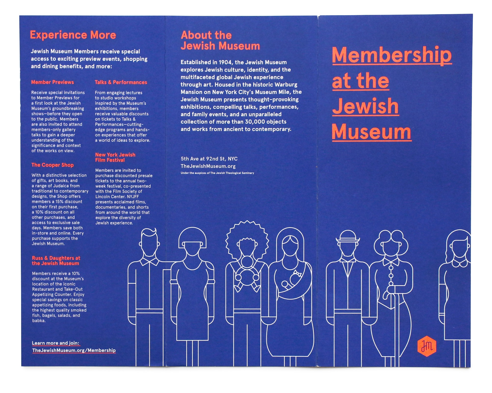
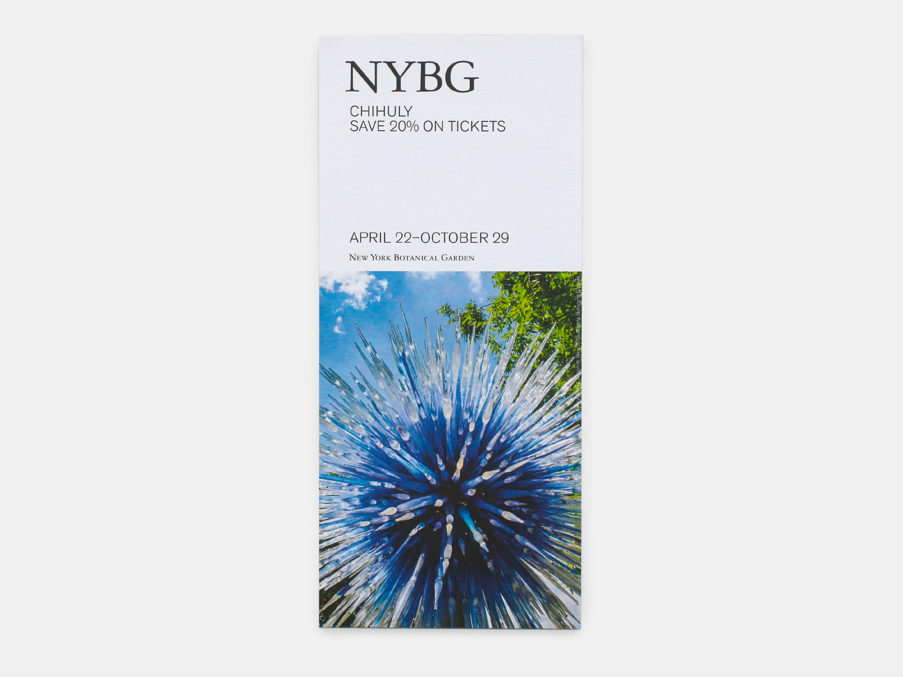
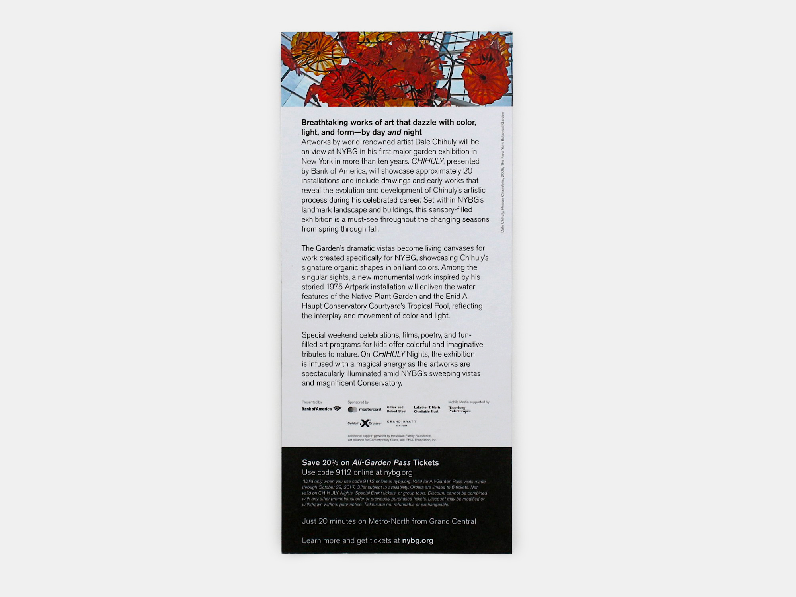